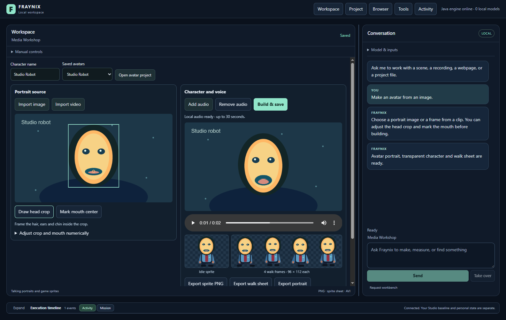

Make a talking avatar and game character from an image
Reopen the original robot example in Avatar Studio, or build it from a portrait and an audio fixture.

Avatar Studio with a marked portrait, an animated mouth pose and a game sprite
Four transparent walk frames from the same source
System files
Open source